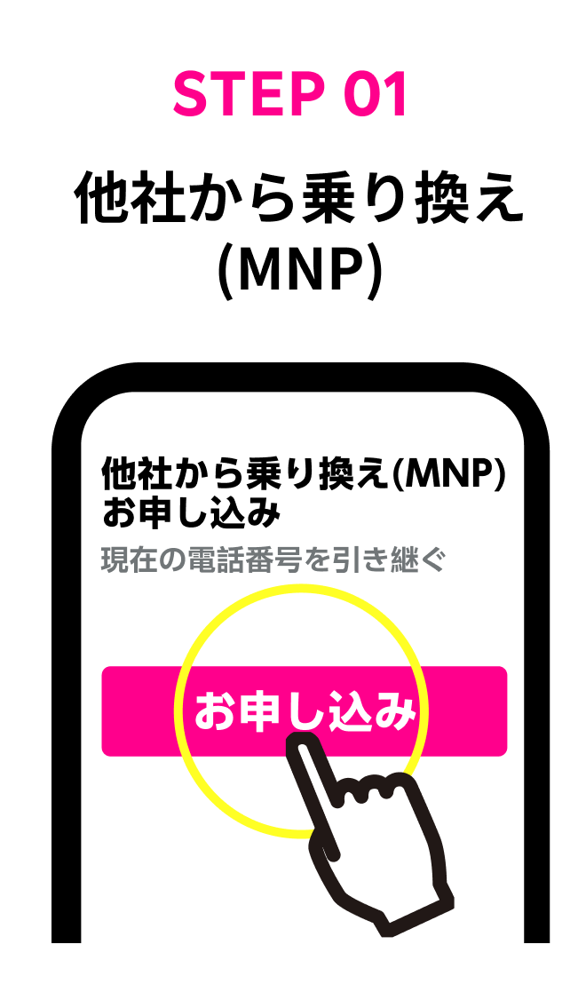
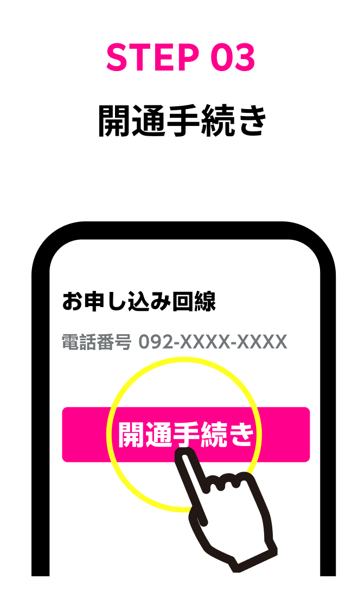
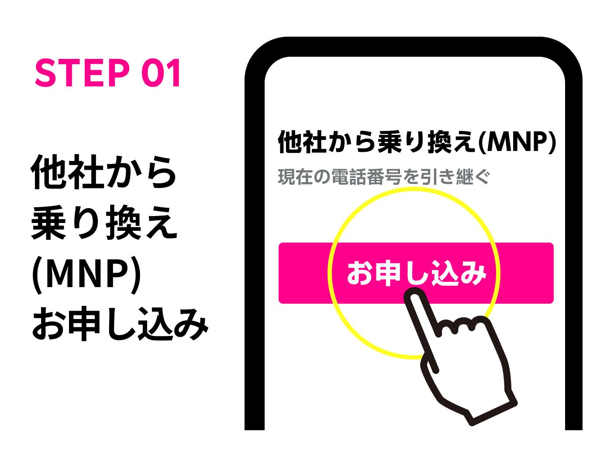
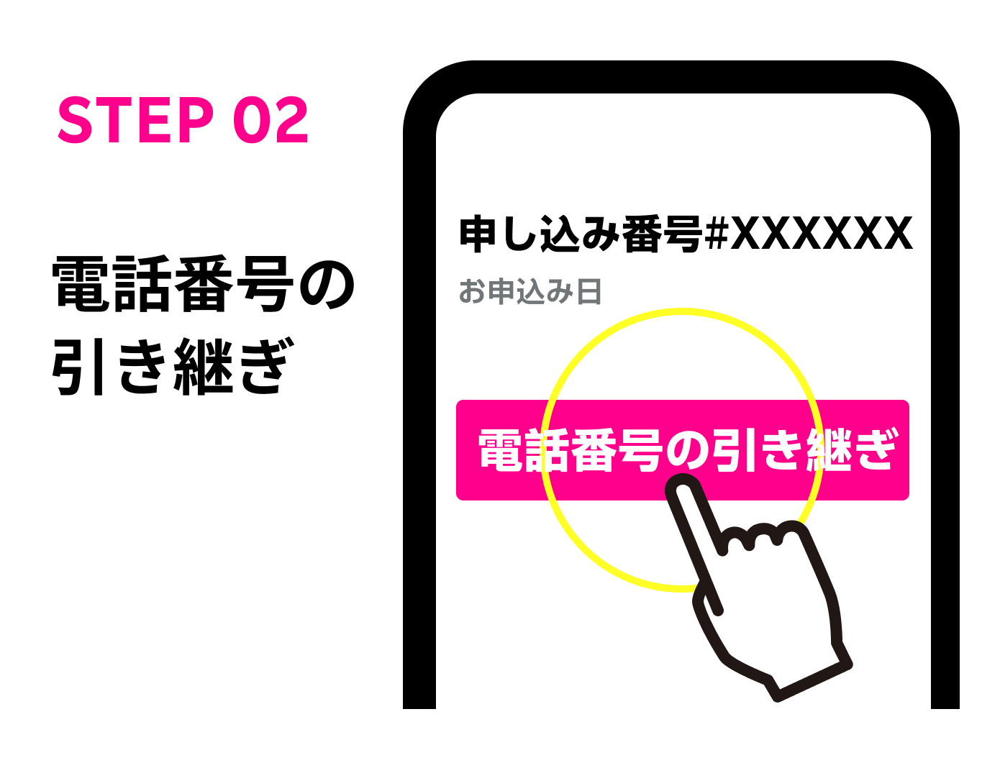
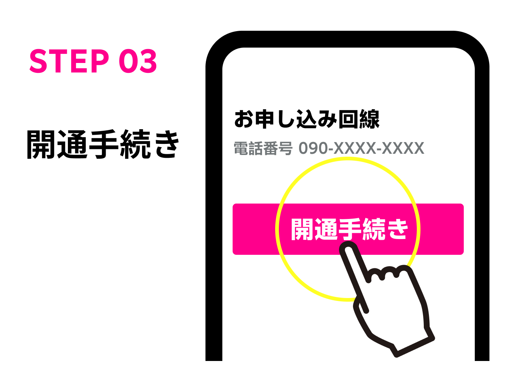

MNP予約番号は不要
楽天モバイルだけで手続き完結
楽天モバイルへの乗り換えは
かんたん３ステップでOK






MNPワンストップ対象携帯電話会社（サービス）
次の対象携帯電話会社（サービス）からお乗り換えされる方は「MNPワンストップ」でのお手続き※いただけますが、そのほかの携帯電話会社（サービス）からお乗り換えされる方はMNP予約番号によるお手続きが必要です。
※ただしMNPワンストップ対象携帯電話会社（サービス）をご利用のお客様でも、既にMNP予約番号を取得済みの場合は、「MNP予約番号によるお手続き」をお願いいたします。
-
MNPワンストップ対象 携帯電話会社（サービス）
・NTTドコモ
・au
・ソフトバンク
・ahamo
・UQ mobile
・povo
・ワイモバイル
・LINEMO
・LINEモバイル
・ジャパネットたかた通信サービス
・日本通信SIM
・b-mobile
・mineo
・センターモバイル
・LPモバイル
手続きはたったこれだけ
申し込み後最短3分で乗り換えできます
＼ だから、楽天モバイル ／
契約数650万回線を突破
WEBなら申し込み完了後 最短3分で開通※2
楽天モバイルに乗り換える
※1 2024年4月時点
※2 eSIM対応製品でeSIMをご利用の場合。審査状況により変動。アプリ最新版利用時。